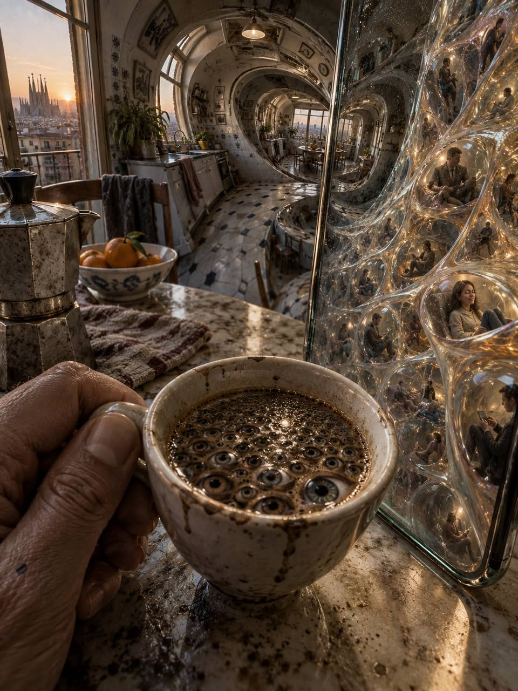
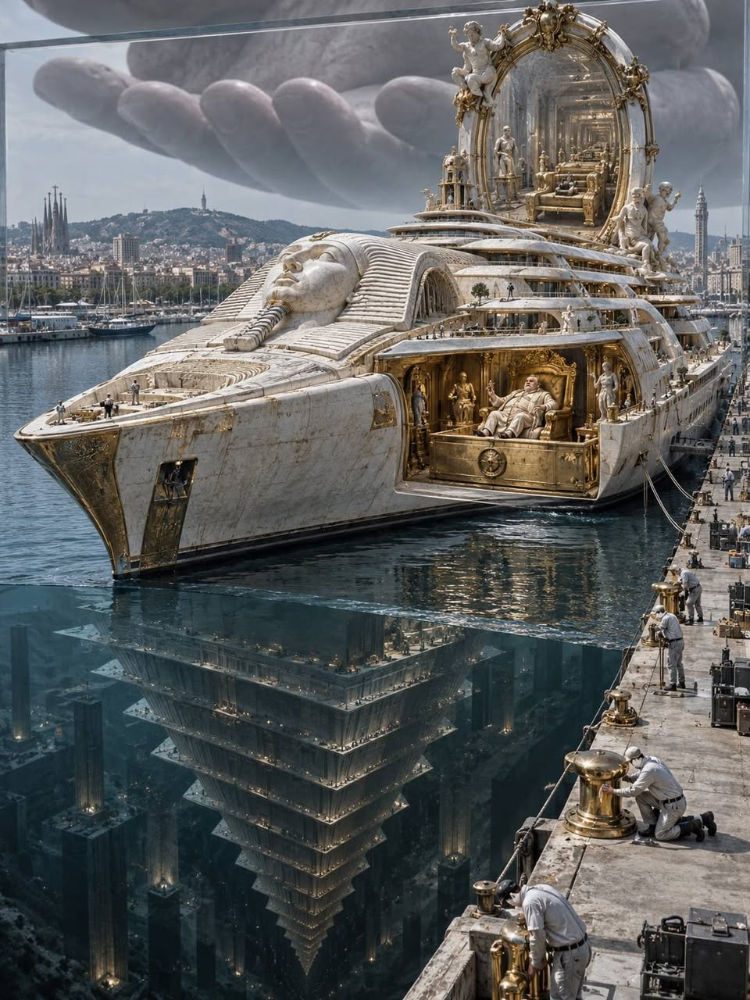
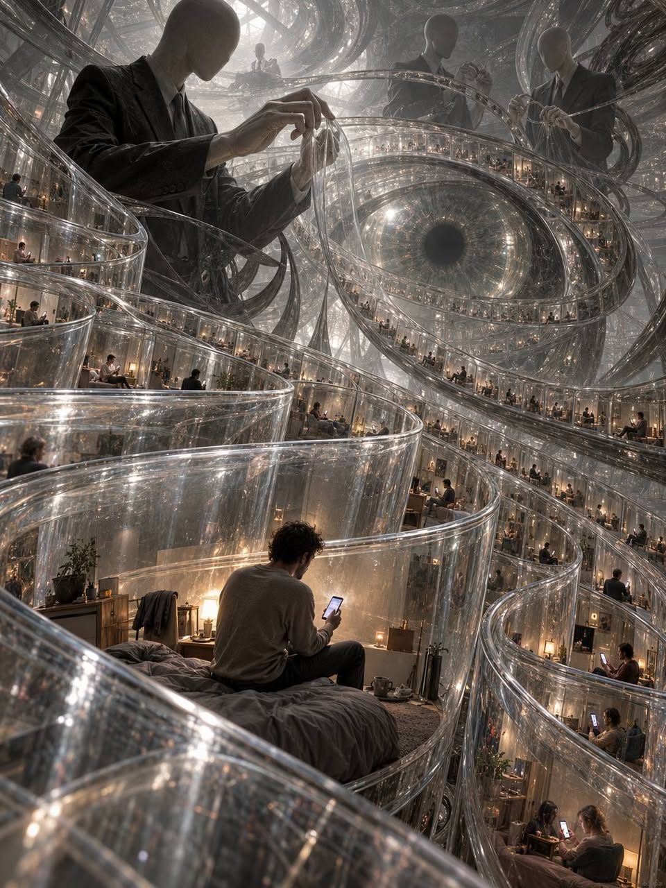
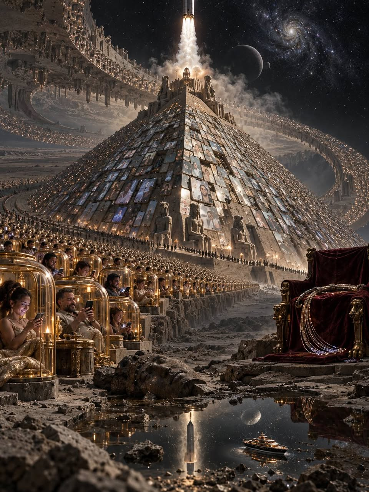

I. Цифровые фараоны
Сидя за кружкой утреннего кофе и наблюдая, как сквозь стекло гаджета пульсирует выверенная, стерильная цифровая жижа, испытываешь не просто глухое раздражение, а чистую, физиологическую тошноту, подступающую к горлу вместе с первым глотком. Мысль, которая влезла в голову, не просто очевидна — она ослепляет своей неприкрытой, циничной, вопиющей наготой, как прожектор, направленный прямо в зрачок.
Всё началось с простейшего, почти дикого вопроса, который настиг меня в Барселоне. Я стоял на причале прямо перед Dilbar, этой 156-метровой плавучей домовиной невероятной стоимости. Сияющая глыба из металла и мрамора, казалось, перекрывала весь порт, заслоняла собой море, небо и сам горизонт, а вокруг, как муравьи у подножия идола, суетилась уйма обслуги: клининг, матросы, охрана. И тогда в голову влезла не зависть, а глубочайшее, ошеломительное изумление: «Блядь, да что же у этого человека в голове? Нахера одному человеку ТАКАЯ херня?»
Что вообще происходит с сознанием, когда оно оперирует такими категориями? Я не могу прочитать чужую психику с причала. Но именно здесь возникает мой образ: когда объём капитала перешагивает все физические пределы потребления, человеческая эмпатия рискует стать чем-то вроде ненужного органа. В этой сатирической картине вся суетящаяся вокруг обслуга, полирующая латунь до зеркального блеска, превращается в бесплотный инвентарь, в чистые функции, в мебель, которая умеет кланяться. Возникает образ эго полубога, для которого накопленные ресурсы словно служат пропуском за пределы человеческой морали, законов и здравого смысла. Я говорю об опасной логике власти, а не ставлю владельцу диагноз. Это дистиллированное, пещерное «фараонство» с мраморными бассейнами вместо гробниц.

Пирамида власти
Но самый жуткий, самый отвратительный сатирический поворот для меня заключается в другом: этот персонаж со своей барселонской игрушкой, каким бы вершителем судеб он ни выглядел, в моей пирамиде оказывается всего лишь внизу, в самом подвале. Его богатство выставлено напоказ. А власть тех, кто владеет инфраструктурой, через которую мы работаем, общаемся и видим мир, куда труднее измерить длиной судна. На этом фоне яхта кажется самым большим блестящим булыжником в порту, погремушкой купеческого эго. Для такого контраста не нужна тайная иерархия хозяев: достаточно различия между демонстрацией богатства и властью над инфраструктурой.
А вот если подняться от этого демонстративного богатства к вершине моей метафоры — туда, где на облаках из серверов восседают цифровые понтифики вроде Маска, Безоса и Цукерберга, — открывается совсем иная, леденящая бездна.
На этом уровне мерой власти становятся уже не длина палуб и количество бассейнов. Я вижу здесь риск иной логики: сверхкапитал требует защиты, а стремление устранить любую угрозу ему может перерасти в одержимость контролем. Это моё прочтение системного риска, а не знание о том, что происходит в чьей-то голове.

Цифровой вольер
Их богатство — это не только яхты и дворцы. В моей оптике оно означает возможность влиять на саму ткань нашей реальности. Мы жмём на экраны гаджетов, а для каждого из нас в этот самый миг выстраивается персональное информационное облако: к нашим эмоциям и кликам аккуратно подшивается «хорошее» к хорошему, «плохое» к плохому — стежок за стежком, как саван по мерке. Я не берусь утверждать, что все эти технологии создаются с единственной целью манипуляции. Меня тревожит то, как легко обещание прогресса и гуманизма может обернуться замкнутым цифровым вольером с невидимыми прутьями, внутри которого манипуляция становится чистейшей, филигранной работой.
Обывателю непросто осознать даже топологическую гипотезу Пуанкаре, которую доказал Перельман. Для меня это метафора разрыва между повседневным пониманием и сложностью систем — не доказательство технологий контроля и не свидетельство о том, как мыслят владельцы платформ. Но образ страшен: система, в которой человек читается лишь как предсказуемая, оцифрованная биомасса, как набор переменных в алгоритмах, рассчитанных на десятилетия вперёд. В этой антиутопической партитуре модели просчитывают топологию людского стада, его изгибы, разрывы и точки сжатия, а персональные «облака интересов» становятся лишь маленьким инструментом, незаметной ремаркой на полях гигантского замысла тотального управления.
В предельной версии этой логики не остаётся ни грамма гуманитарной составляющей. Я представляю систему, наглухо подчинённую почти животному императиву: сохранить, защитить и любой ценой нарастить контроль. Это образ того, во что способна превратиться концентрация власти, а не диагноз психики конкретных людей.

По разные стороны
Если эта логика побеждает, мы и владельцы такой системы оказываемся по разные стороны баррикад. У нас разные траектории, разные планеты и прямо противоположные задачи.
Тогда их ИИ и технологии рискуют работать прежде всего на защиту собственной системы от рисков: сводить к нулю «неудобный человеческий фактор», удерживать нас в кольце манипуляций и отсекать угрозы статусу-кво. Именно такой исход я считаю опасностью: обещанный инструмент освобождения становится инструментом самосохранения власти.
Сухая, беспощадная арифметика не оставляет места для слюнявых иллюзий: по данным Oxfam, опубликованным 19 января 2026 года, 12 богатейших людей планеты владеют большим состоянием, чем беднейшие 50% человечества — 4,1 млрд человек. Для меня это пошлая, безумная форма неофеодализма, воспроизводящая древнюю логику господства. В моей метафоре менталитет фараонов не изменился со времён Древнего Египта — изменились лишь плети, превратившиеся в цифровые алгоритмы, которые больше не оставляют рубцов на спине, но оставляют их в мозгу.
У подножия
И финал этой драмы предельно отвратителен: общество, запертое в уютных облаках собственных гаджетов, само поощряет этот безумный абсурд — лайком, подпиской, восторженным вздохом. Мы живём в мире, где технологии шагнули в глубокий космос, а структура власти словно провалилась обратно в бронзовый век. И пока человечество с открытым ртом листает свой выверенный контент и восторгается чужими яхтами, эта колея становится только глубже, превращая весь наш хвалёный гуманизм в бесполезный цифровой шум у подножия чужой египетской пирамиды — шум, которого фараоны даже не слышат.

P.S.
Я и сам пользуюсь их ИИ — ежедневно, плотно, методично. И не вижу в этом никакого противоречия. Невозможно противостоять тому, чего не понимаешь: раб, не знающий устройства собственной цепи, обречён носить её вечно. Я изучаю эту машину не так, как верующий изучает святыню, а так, как анатом изучает труп, — до последнего сухожилия. Как она выстраивает облако вокруг человека, на какие эмоции давит, где именно пришивает «хорошее» к хорошему. Потому что тот, кто понял механизм манипуляции, получает шанс перестать быть лишь её объектом и стать её наблюдателем. Инструмент, способный служить управлению нами, в руках понимающего может превратиться в инструмент освобождения. Фараоны строили пирамиды руками рабов, но ни одна пирамида не рассчитана на раба, который выучил её чертёж.
От внимания — к ожиданию
Но власть над вниманием не заканчивается отбором того, что мы видим. Она продолжается в том, чего мы ждём. Если будущее приходит к нам главным образом как обещание следующего релиза, меняется не только рынок технологий — меняется вкус самого ожидания. Отсюда следующий вопрос: что остаётся от неба, когда каждый полёт становится презентацией?
II. Небо, которое перестали показывать
Сатирическое эссе
В видеоролике автомобиль научился летать, а Илон Маск наконец патентует гравитацию, чтобы удерживать нас на Земле силой корпоративного контракта.
Я смотрел это видео так, как смотрят в окно поезда, который не останавливается на твоей станции. Чёрная сцена, вымытая до блеска пустоты. Бас, от которого в груди вздрагивает что-то древнее, ещё дочеловеческое, — тот самый ствол мозга, которому всё равно, что ему показывают, лишь бы громко и ярко. В этом срежиссированном зрелище машина отрывается от пола медленно, с ленивой неохотой сытого животного. Зал ахает по команде. Свет срежиссирован, восторг срежиссирован, даже пауза перед аплодисментами отрепетирована до миллисекунды. И в ту секунду, когда должно перехватить дыхание, не перехватывает ничего.
Небо принадлежало всем
А ведь было время — и кто-то из нас ещё помнит его вкус, как помнят вкус размоченного в чае печенья, — когда небо принадлежало всем и никому, когда бумажный змей, склеенный из старой газеты и мучного клейстера, рвался из рук над июльским лугом, пахнущим нагретым клевером и речной водой, и в этом рывке, в дрожании нитки между пальцами было больше полёта, чем во всех презентациях мира, потому что тот полёт ничего не продавал, никого не монетизировал, ни у кого не просил подписки, а просто был, как бывает дождь, как бывает первая любовь, как бывает сама жизнь, ещё не разлинованная в таблицы.
Сегодня небо сдают в аренду. Homo sapiens, существо, которое по историческим меркам ещё вчера выковыривало камнем мозг из чужих черепов, теперь выковыривает из чужих черепов внимание. Инструмент поменялся. Примат остался.
Эпоха победившего сиквелизма
Трамп уже пакует чемоданы на Луну. Подарочный билет в 1 конец с персональной табличкой SpaceX. Make Space Great Again. Оплачен из бюджета будущих колоний. Наконец запуск, который заслуживает салюта. Пока на Земле рушится последний здравый смысл, геополитический цирк торжественно экспортируют в безвоздушное пространство. Идеальная синергия. Один продаёт билет в пустоту, другой с радостью улетает туда, где его бесконечные твиты хотя бы не будут доходить до стратосферы.
Мы живём в эпоху победившего сиквелизма, где реальность превратилась в худшую серию низкобюджетного фантастического сериала, продюсеры которого давно сошли с ума, а сценарий пишут алгоритмы Кремниевой долины. В этом сериале даже катастрофы лишены катарсиса. Их пролистывают большим пальцем между рецептом и рекламой.
И вот почему не цепляет. Когда чудо выходит каждый квартал, оно перестаёт быть чудом и становится товарной позицией. Летающая машина из видеоролика сегодня вызывает то же чувство, что новый цвет корпуса телефона. Нас перекормили будущим, и организм, как любой перекормленный организм, ответил тошнотой и равнодушием.
Спасение в следующем релизе
У нас есть квантовые процессоры, нейросети, способные имитировать душу, и ракеты, способные догнать собственное эго их создателя. Но ценой этого прогресса стала абсолютная стерильность. Презентация давно превратилась в литургию. Сцена стала алтарём, гаджет стал мощами, а генеральный директор в чёрной футболке стал первосвященником, который раз в год выходит к пастве объявить, что спасение снова перенесено на следующий релиз. Церковь сменила вывеску. Технология паствы осталась прежней. Нас ведут к звёздам парни с пустыми глазами и девелоперским зудом в пальцах, которые видят в человеке лишь биомассу для генерации метрик и топливо для своих пиар-кампаний.
Они обещают нам Марс, но в их исполнении любая колонизация выглядит как унылый закрытый посёлок для корпоративных боссов с автомойками и рекламой криптобирж на кратерах. Я почти вижу его. Ровные купола цвета больничного кафеля, кондиционированный воздух без запаха, дорожки, по которым никто не гуляет просто так, и где-то на краю, за шлюзом, рыжая пыль, которая веками ждала человека, а дождалась парковку. Они забирают у нас небо, чтобы превратить его в рекламный баннер. Они строят будущее не для того, чтобы человечество вздохнуло свободней, а чтобы загнать само понятие свободы в цифровой Excel-файл с ограниченным доступом.
Время стало плоским
Время сегодня стало плоским, как экран. Мы больше не ждём будущего. Мы ждём обновления. Раньше ожидание имело глубину, как ночь перед дорогой, когда чемодан стоит у двери, а сердце уже в пути. Теперь ожидание похоже на полоску загрузки, которая ползёт и ползёт, и мы смотрим на неё, не помня уже, что именно должно было загрузиться.
Те, кто остался внизу
Машины летят выше. Трамп летит на Луну. А мы сидим внизу, зажатые между монополиями алгоритмов и бетонной тоской их технофеодализма, пытаясь разглядеть сквозь этот искусственный туман хотя бы слабый отблеск человеческого достоинства. Где-то там, под слоем рекламы, ещё лежит то небо с бумажным змеем. Оно никуда не делось. Просто его перестали показывать.
Вопрос уже не в том, сможет ли полететь машина.
Вопрос в том, останется ли хоть кто-то внизу, кому этот полёт будет нужен.
Archi Eire · АЦХ · ADC 🪶
I. Digital Pharaohs
Sitting over a mug of morning coffee, watching that calibrated, sterile digital sludge pulse through the glass of a gadget, you feel more than a dull irritation: a pure, physical nausea rises in your throat with the first sip. The thought that has forced its way into your head is more than obvious. In its bare, cynical, screaming nakedness, it blinds you like a searchlight aimed straight into your pupil.
It all began with a simple, almost feral question that caught up with me in Barcelona. I was standing on the quay directly in front of Dilbar, that 156-metre floating coffin of staggering cost. The gleaming mass of metal and marble seemed to block the entire port, blotting out the sea, the sky, the horizon itself, while a swarm of staff bustled around it like ants at the foot of an idol: cleaners, sailors, security. What forced its way into my head then was not envy but a profound, staggering bewilderment: “Fuck, what goes on inside this man’s head? What the fuck does one person need THAT monstrosity for?”
What happens to a mind when it operates in categories like these? I cannot read someone else’s psyche from a quay. But this is where my image takes shape: once capital exceeds every physical limit of consumption, human empathy risks becoming something like a redundant organ. In this satirical picture, all those bustling staff polishing the brass to a mirror finish turn into incorporeal inventory, pure functions, furniture that knows how to bow. The image of a demigod’s ego emerges, as though accumulated resources were a passport beyond human morality, law and common sense. I am describing a dangerous logic of power, not diagnosing the owner. This is distilled, caveman pharaohhood, with marble swimming pools in place of tombs.
The Pyramid of Power
But for me the most chilling, most revolting satirical twist lies elsewhere: this character with his Barcelona toy, however much he may look like a master of destinies, occupies the bottom of my pyramid, its very basement. His wealth is on display. The power of those who own the infrastructure through which we work, communicate and see the world is much harder to measure in the length of a vessel. Against that backdrop, the yacht looks like the biggest shiny rock in the port, a rattle for a merchant’s ego. This contrast needs no secret hierarchy of masters: the difference between displaying wealth and wielding power over infrastructure is enough.
But climb from this conspicuous wealth towards the summit of my metaphor—to the server clouds where digital pontiffs such as Musk, Bezos and Zuckerberg sit enthroned—and an altogether different, chilling abyss opens up.
At this level, power is no longer measured in deck length or the number of swimming pools. What I see here is the risk of a different logic: immense capital demands protection, and the drive to eliminate every threat to it can grow into an obsession with control. This is my reading of a systemic risk, not knowledge of what happens inside anyone’s head.
The Digital Enclosure
Their wealth is more than yachts and palaces. Through my lens, it means the capacity to influence the very fabric of our reality. We tap our gadget screens, and at that very moment a personal information cloud is assembled for each of us: around our emotions and clicks, “good” is carefully stitched to good, “bad” to bad—stitch by stitch, like a made-to-measure shroud. I cannot claim that all these technologies are created for the sole purpose of manipulation. What troubles me is how easily the promise of progress and humanism can turn into a sealed digital enclosure with invisible bars, within which manipulation becomes a work of exquisite precision.
It is no easy thing for an ordinary person even to grasp the Poincaré conjecture, which Perelman proved. For me, this is a metaphor for the gulf between everyday understanding and the complexity of systems—not proof of technologies of control, nor evidence of how platform owners think. But the image is terrifying: a system in which a human being is read only as predictable, digitised biomass, a set of variables in algorithms projected decades ahead. In this dystopian score, models calculate the topology of the human herd, its curves, ruptures and points of compression, while personal “clouds of interest” become no more than a small instrument, a marginal annotation in a vast design for total management.
In the extreme version of this logic, not a gram of human concern remains. I imagine a system sealed inside an almost animal imperative: preserve, protect and increase control at any cost. This is an image of what concentrated power can become, not a diagnosis of particular people’s minds.
On Opposite Sides
If this logic wins, we and the owners of such a system end up on opposite sides of the barricades. Our trajectories diverge, our planets differ, our aims pull in opposite directions.
Then their AI and technologies risk serving above all to shield their own system from danger: reducing the “inconvenient human factor” to zero, keeping us inside a ring of manipulation and cutting off threats to the status quo. That is the outcome I fear: the promised instrument of liberation becomes an instrument through which power preserves itself.
Cold, merciless arithmetic leaves no room for syrupy illusions: according to figures published by Oxfam on 19 January 2026, the world’s 12 richest people own more wealth than the poorest 50% of humanity—4.1 billion people. To me, this is a vulgar, insane form of neo-feudalism, reproducing an ancient logic of domination. In my metaphor, the mentality of the pharaohs has not changed since Ancient Egypt. Only the whips have changed, becoming digital algorithms that no longer leave scars on the back but leave them in the brain.
At the Foot of the Pyramid
And the ending of this drama is utterly revolting: society, locked inside the cosy clouds of its own gadgets, actively rewards this lunatic absurdity with a like, a subscription, an admiring sigh. We live in a world where technology has ventured into deep space while the structure of power seems to have collapsed back into the Bronze Age. And as humanity scrolls open-mouthed through its calibrated content and marvels at other people’s yachts, the rut deepens, turning all our vaunted humanism into useless digital noise at the foot of someone else’s Egyptian pyramid—noise the pharaohs do not even hear.
P.S.
I use their AI myself—daily, intensively, methodically. And I see no contradiction in that. You cannot resist what you do not understand: a slave who does not know how his own chain is made is condemned to wear it forever. I study this machine not as a believer studies a shrine, but as an anatomist studies a corpse—down to the last tendon. How it builds a cloud around a person, which emotions it presses on, precisely where it stitches “good” to good. Because understanding the mechanism of manipulation gives you a chance to stop being merely its object and become its observer. An instrument capable of managing us can, in the hands of someone who understands it, become an instrument of liberation. The pharaohs built pyramids with slaves’ hands, but no pyramid is designed for a slave who has learned its blueprint.
From Attention to Expectation
But power over attention does not end with selecting what we see. It extends into what we wait for. If the future reaches us chiefly as the promise of the next release, more than the technology market changes: the very flavour of expectation changes. Which leads to the next question: what remains of the sky when every flight becomes a presentation?
II. The Sky They Stopped Showing
A satirical essay
In the video, a car has learned to fly, while Elon Musk is finally patenting gravity to keep us on Earth by force of corporate contract.
I watched that video the way you look out of a train that will not stop at your station. A black stage, scrubbed to the gleaming emptiness of nothing. Bass that makes something ancient shudder in your chest, something not yet human — that same brainstem that does not care what it is being shown, so long as it is loud and bright. In this choreographed spectacle, the car rises slowly from the floor, with the lazy reluctance of a well-fed animal. The audience gasps on cue. The light is choreographed, the wonder is choreographed, even the pause before the applause has been rehearsed to the millisecond. And at the very moment that is meant to take your breath away, nothing catches at all.
The Sky Belonged to Everyone
And yet there was a time — some of us still remember its taste, the way you remember a biscuit softened in tea — when the sky belonged to everyone and no one, when a paper kite made of old newspaper and flour paste tugged to escape your hands above a July meadow smelling of sun-warmed clover and river water, and there was more flight in that tug, in the trembling of the string between your fingers, than in all the product launches in the world, because that flight sold nothing, monetised no one, asked nobody to subscribe, but simply was, as rain is, as first love is, as life itself is before it has been ruled into tables.
Today the sky is being leased out. Homo sapiens, a creature that only yesterday, in historical terms, was using a stone to gouge brains from other people's skulls, is now gouging attention from other people's skulls. The tool has changed. The primate remains.
The Age of Triumphant Sequelism
Trump is already packing for the Moon. A complimentary ticket, 1 way, complete with a personalised SpaceX nameplate. Make Space Great Again. Paid for out of the budget of the future colonies. At last, a launch that deserves fireworks. While the last of Earth's common sense collapses, the geopolitical circus is ceremoniously exported into the vacuum of space. Perfect synergy. One man sells a ticket to the void; the other happily flies off to a place where at least his endless tweets will not reach the stratosphere.
We live in the age of triumphant sequelism, where reality has become the worst episode of a low-budget science-fiction series whose producers went mad long ago and whose scripts are written by Silicon Valley algorithms. In this series, even catastrophes offer no catharsis. A thumb scrolls past them between a recipe and an advert.
And that is why it leaves us cold. When a miracle comes out every quarter, it stops being a miracle and becomes a stock item. Today, the flying car in the video stirs the same feeling as a new colour for a phone casing. We have been overfed the future, and the body, like any overfed body, has responded with nausea and indifference.
Salvation in the Next Release
We have quantum processors, neural networks capable of imitating a soul, and rockets capable of catching up with their creator's own ego. But the price of this progress has been absolute sterility. The product launch turned into a liturgy long ago. The stage became an altar, the gadget became a holy relic, and the chief executive in a black T-shirt became a high priest who comes before his flock once a year to announce that salvation has once again been postponed until the next release. The church has changed its sign. The technology of tending the flock remains the same. We are being led to the stars by men with empty eyes and a property developer's itch in their fingers, who see a human being as nothing but biomass for generating metrics and fuel for their PR campaigns.
They promise us Mars, but in their hands any colonisation looks like a dreary gated estate for corporate bosses, complete with car washes and crypto-exchange adverts on the craters. I can almost see it. Neat domes the colour of hospital tiles, odourless air conditioning, paths where nobody ever walks for the sake of walking, and somewhere at the edge, beyond the airlock, red dust that waited centuries for humanity and got a car park. They are taking the sky from us to turn it into a billboard. They are building the future to lock the very idea of freedom inside a digital Excel file with restricted access, rather than let humanity breathe more freely.
Time Has Gone Flat
Time today has gone flat as a screen. We no longer wait for the future. We wait for an update. Waiting used to have depth, like the night before a journey, when your suitcase stands by the door and your heart is already on its way. Now waiting is a progress bar that crawls and crawls, and we stare at it, no longer remembering what was supposed to load.
Those Left Below
The cars fly higher. Trump flies to the Moon. And we sit below, wedged between the monopolies of algorithms and the concrete desolation of their techno-feudalism, trying to make out, through this artificial fog, even a faint glimmer of human dignity. Somewhere down there, beneath the layer of advertising, that sky with its paper kite is still there. It has not gone anywhere. They have simply stopped showing it.
The question is no longer whether a car can fly.
The question is whether anyone will be left below who has any use for that flight.
Archi Eire · АЦХ · ADC 🪶